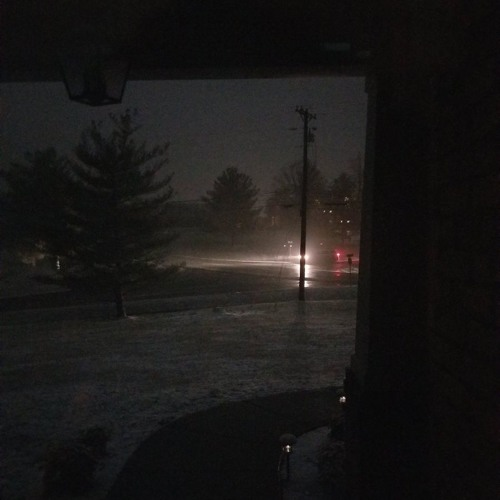
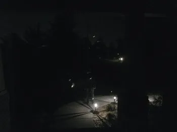

Sobre a organização
A Moon Company é uma organização global estabelecida após o evento do desaparecimento da lua. Nossa missão é preservar a civilização, manter a infraestrutura de luzes artificiais e estudar os efeitos a longo prazo da ausência de radiação lunar.
Recapitulação de Eventos
Relatório 001: Primeiras Atividades
- Desaparecimento da Lua
- Escuridão global
- Problemas subsequentes
Reportado em 21 de Setembro de 2022, a noite chega mas a lua não, e surpreendentemente o dia não retorna mais também, a lua se foi e levou a luz solar junto com ela. A partir de 22 de Setembro do mesmo ano, começou-se o periodo denominado "Noite Valburga", conhecida no folclore alemão por ser a noite do encontro de bruxas.
Com o sumiço repentino da lua, também some a luz solar e todos os resquícios da mesma. Algo inédito agora tornava-se rotina: Uma 'noite' que dura 24 horas sem nem que haja uma lua. Pesquisas preliminares sugerem que o desaparecimento da lua pode ter provocado uma interferência ainda não compreendida na radiação solar incidente sobre a Terra. A comunidade ciêntifica permanece dividida sobre a causa do evento ou se ele é permanente.
Com o desaparecimento do sol, o caos rapidamente tem tomado conta das ruas e do mundo. Por todos os países, lojas são saqueadas constantemente e pessoas se tornam deliberadamente violentas. Uma das consequências mais preocupantes tem sido a carência de vitamina D no corpo, causando fraqueza em massa na população além da diminuição no sistema imunológico, fazendo com que doenças antes quase erradicadas acabem voltando como varíola e poliomelite. Com a falta de luz solar, gigantescas áreas cobertas por campos de placas solares se tornaram obsoletas, fazendo com que o preço de diversas tecnologias caísse repentinamente gerando uma crise no mercado tecnologico como um todo, causando uma depressão econômica mundial.

Foto às 13:23h
Relatório 002: Iluminação Global
- Falta de luz natural
- Novas formas de iluminação
Na ausência de luz natural, a infraestrutura global passou a depender integralmente de luzes artificiais para manter ruas clareadas, e apesar de ser uma solução temporária válida, ela não se sustentou por muito tempo. Com os problemas econômicos emergentes, é normal esperar intensos aumentos nos preços de sistemas vitais, assim, o tipo de infraestrutura mais custosa agora se tornava as fontes de luz. Nas semanas subsequentes, foi observado um declínio progressivo nos indicadores de saúde pública com o intenso uso de fontes artificiais de luzes, e era inevitável que só tendesse a piorar cada vez mais.
A Moon Company, percebendo o problema que viria a se agravar mais ainda com o passar dos meses, investiu massivamente em fontes de luzes artificiais sustentáveis que não fizessem tão mal aos organismos quanto as normais. Apesar de ainda não ser saudável como a natural, houveram avanços no ramo da iluminação artificial, ao ponto que, apesar de extremamente cara e só presente em ambientes de pesquisa, existem agora fontes que não fazem mal ao corpo.
Ruas permanecem escuras e não é recomendado caminhar por elas desacompanhado e/ou desarmado.

Cuidado com luzes suspeitas lá fora, ruas não estão oficialmente iluminadas.
Relatório 003: Instruções
- Suprimentos
- Enfermidades
[RESTRITO]
Suprimentos se tornam cada vez mais escassos tendo em vista que várias pessoas estão dispostas a fazer de tudo para sobreviver, procurar em mercados/lojas convencionais é inútil, já foram todas roubadas. Indicamos que você espere pelo retorno de agentes da Moon Company até sua localidade levando mantimentos, é a forma mais segura de sobreviver. Mas para que eles saibam onde você está, você deve submeter uma mensagem a este Email: MoonCompany27@gmail.com para que possamos ir até você. Evite deslocamentos desnecessários.
Uma doença chamada Hipomorfose Fotodegenerativa (Hi'fo) tem se espalhado cada vez mais rápido pelos locais principalmente com temperaturas mais amenas desde que a lua desapareceu, mas cientistas suspeitam que o vírus está se mutando e possivelmente pode atingir áreas de frio/calor intenso em pouco tempo. Seus sintomas ainda não foram totalmente catalogados pela organização. Relatos indicam que indivíduos contaminados pela Hi'fo podem apresentar comportamentos imprevisíveis e potencialmente violentos. Caso identifique sinais suspeitos em familiares, vizinhos ou conhecidos, recomendamos reportar imediatamente à Moon Company. Além disso, recebemos também relatos de indivíduos com alterações físicas severas em áreas de baixa iluminação, a Moon Company ainda não confirmou a natureza desses eventos, mas indicamos que evitem. Portanto, novamente, recomendamos que a população permaneça em casa e confie sua subsistência na Moon Company, pois somos uma organização criada justamente para assisti-los nesse momento.